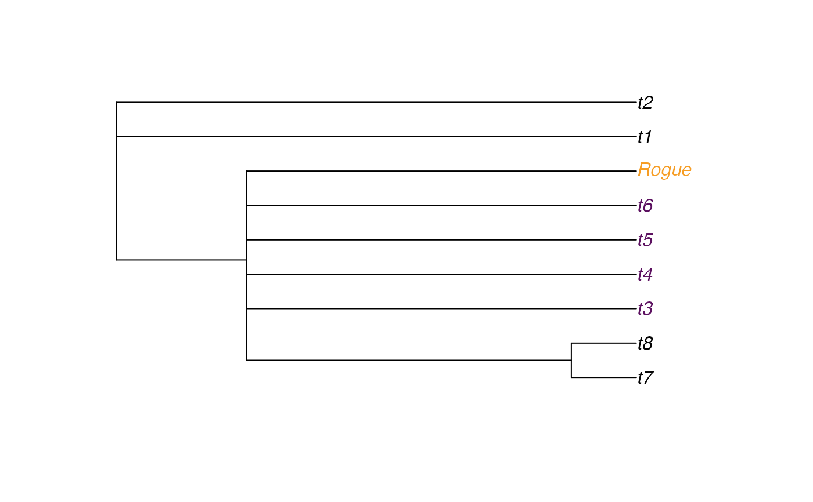

TipInstability() calculates the instability of each leaf in a tree.
Unstable leaves are likely to display roguish behaviour.
TipInstability( trees, log = TRUE, average = "mean", deviation = "sd", checkTips = TRUE ) ColByStability(trees, log = TRUE, average = "mean", deviation = "sd")
Arguments
| trees | List of trees to analyse. |
|---|---|
| log | Logical specifying whether to log-transform distances when calculating leaf stability. |
| average | Character specifying whether to use |
| deviation | Character specifying whether to use |
| checkTips | Logical specifying whether to check that tips are numbered consistently. |
Details
Smith (2022) defines the instability of a pair of leaves as the median absolute divergence in the cophenetic distance (the number of edges in the shortest path between the leaves) across all trees, normalized against the mean cophenetic distance. The instability of a single leaf is the mean instability of all pairs that include that leaf; higher values characterise leaves whose position is more variable between trees.
References
Smith MR (2022). “Using information theory to detect rogue taxa and improve consensus trees.” Systematic Biology, Accepted MS.
See also
Other tip instability functions:
TipVolatility()
Author
Martin R. Smith (martin.smith@durham.ac.uk)
Examples
library("TreeTools", quietly = TRUE) trees <- AddTipEverywhere(BalancedTree(8), 'Rogue')[3:6] plot(consensus(trees), tip.col = ColByStability(trees))instab <- TipInstability(trees, log = FALSE, ave = 'mean', dev = 'mad') plot(ConsensusWithout(trees, names(instab[instab > 0.2])))